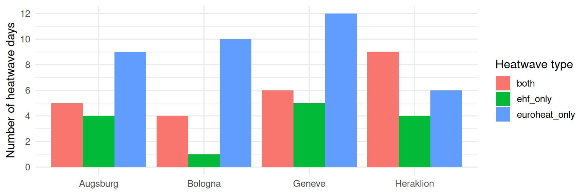
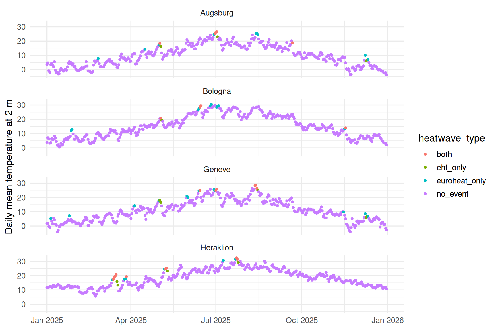
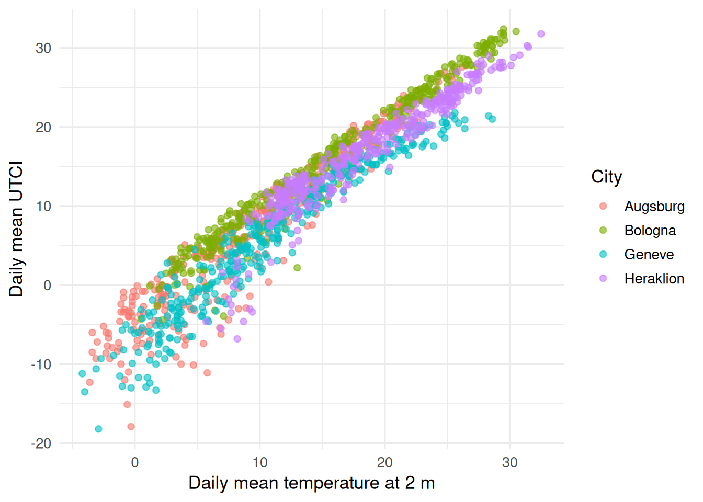
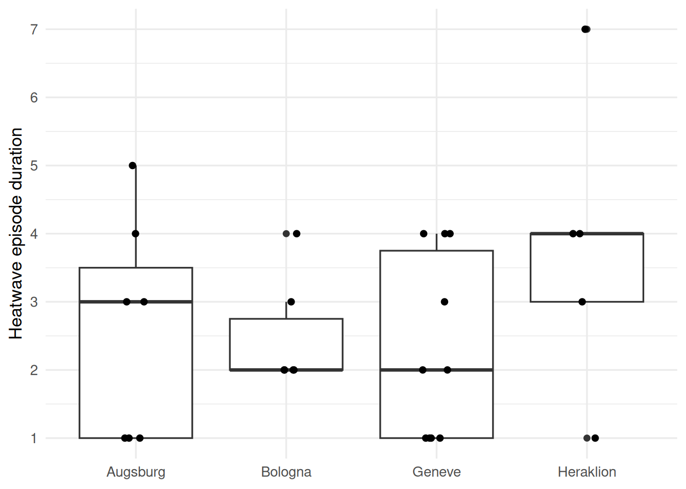
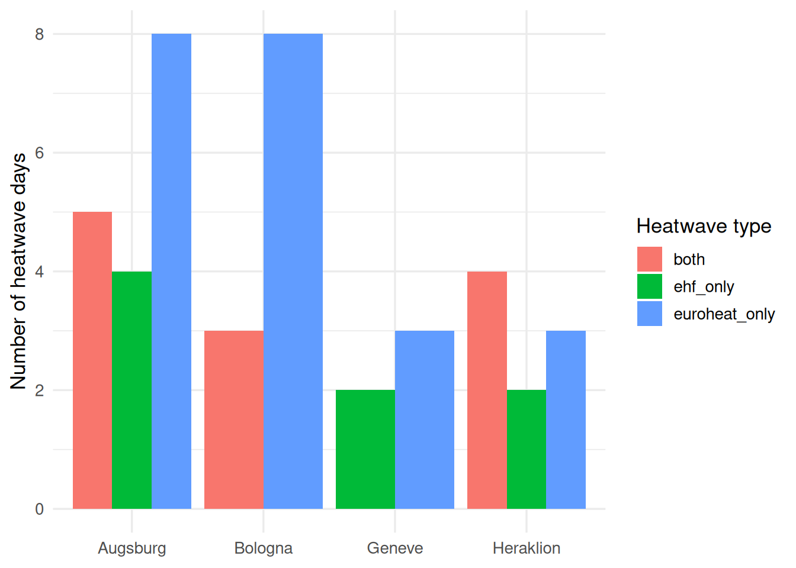
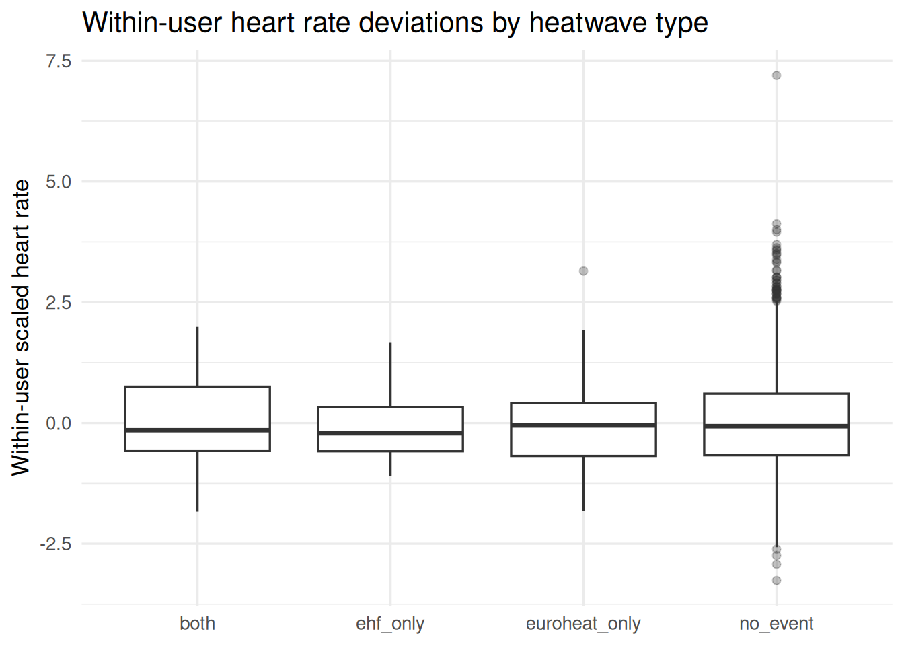

library(tidyverse)
library(lubridate)
library(gt)
source("../../R/load_functions.R")
triggerR <- load_trigger_functions()
rm(load_trigger_functions)
thermal_daily <- read_csv("../../data/environmental_indicators/processed/thermal_daily_2025.csv")
accounts <- triggerR$active_accounts()
trigger_daily <- if (!exists("trigger_daily")) {
triggerR$read_trigger_tables(granularity = "daily", cores = 5, min_obs_per_hour = 10)
} else trigger_daily
dir.create("../../outputs/thermal_indicators", recursive = TRUE, showWarnings = FALSE)thermal_indicators
Check
thermal_daily %>%
filter(heatwave_type != "no_event") %>%
count(city, heatwave_type) %>%
ggplot(aes(x = city, y = n, fill = heatwave_type)) +
geom_col(position = "dodge") +
theme_minimal(base_size = 13) +
labs(x = NULL, y = "Number of heatwave days", fill = "Heatwave type") +
scale_y_continuous(breaks = scales::breaks_width(2))
thermal_daily %>%
group_by(city) %>%
summarise(
mean_t2m = mean(t2m_daily_mean, na.rm = TRUE),
sd_t2m = sd(t2m_daily_mean, na.rm = TRUE),
min_t2m = min(t2m_daily_mean, na.rm = TRUE),
max_t2m = max(t2m_daily_mean, na.rm = TRUE),
mean_utci = mean(utci_daily_mean, na.rm = TRUE),
sd_utci = sd(utci_daily_mean, na.rm = TRUE),
min_utci = min(utci_daily_mean, na.rm = TRUE),
max_utci = max(utci_daily_mean, na.rm = TRUE),
.groups = "drop"
) # A tibble: 4 × 9
city mean_t2m sd_t2m min_t2m max_t2m mean_utci sd_utci min_utci max_utci
<chr> <dbl> <dbl> <dbl> <dbl> <dbl> <dbl> <dbl> <dbl>
1 Augsburg 9.99 7.40 -3.6 26.5 7.49 9.89 -17.9 27.8
2 Bologna 15.1 7.85 0.5 30.5 15.2 9.12 -4.4 32.4
3 Geneve 11.0 7.28 -4.2 28.6 5.96 9.00 -18.2 21.8
4 Heraklion 18.4 5.94 5.7 32.5 16.6 6.98 -6.8 31.8thermal_daily %>%
ggplot(aes(x = date, y = t2m_daily_mean, colour = heatwave_type)) +
geom_point(size = 1) +
facet_wrap(~ city, scales = "free_y") +
theme_minimal(base_size = 13) +
labs(x = NULL, y = "Daily mean temperature at 2 m") +
facet_wrap(~city, ncol = 1)
thermal_daily %>%
ggplot(aes(x = t2m_daily_mean, y = utci_daily_mean, color = city)) +
geom_point(alpha = 0.6) +
theme_minimal(base_size = 13) +
labs(
x = "Daily mean temperature at 2 m",
y = "Daily mean UTCI",
color = "City"
)
heatwave_runs <- thermal_daily %>%
arrange(city, date) %>%
group_by(city) %>%
mutate(
has_heatwave = heatwave_type != "no_event",
run_id = cumsum(has_heatwave != lag(has_heatwave, default = first(has_heatwave)))
) %>%
group_by(city, run_id, has_heatwave) %>%
summarise(
start_date = min(date),
end_date = max(date),
duration_days = n(),
max_t2m = max(t2m_daily_mean, na.rm = TRUE),
max_utci = max(utci_daily_mean, na.rm = TRUE),
.groups = "drop"
) %>%
filter(has_heatwave)
heatwave_runs %>%
arrange(city, desc(duration_days))# A tibble: 28 × 8
city run_id has_heatwave start_date end_date duration_days max_t2m
<chr> <int> <lgl> <date> <date> <int> <dbl>
1 Augsburg 7 TRUE 2025-06-29 2025-07-03 5 26.5
2 Augsburg 13 TRUE 2025-12-08 2025-12-11 4 10
3 Augsburg 5 TRUE 2025-05-01 2025-05-03 3 18.4
4 Augsburg 9 TRUE 2025-08-13 2025-08-15 3 25.6
5 Augsburg 1 TRUE 2025-02-25 2025-02-25 1 7.8
6 Augsburg 3 TRUE 2025-04-16 2025-04-16 1 14.3
7 Augsburg 11 TRUE 2025-09-21 2025-09-21 1 18.8
8 Bologna 5 TRUE 2025-06-12 2025-06-15 4 29.5
9 Bologna 9 TRUE 2025-07-02 2025-07-04 3 29.5
10 Bologna 1 TRUE 2025-01-27 2025-01-28 2 13
# ℹ 18 more rows
# ℹ 1 more variable: max_utci <dbl>heatwave_runs %>%
ggplot(aes(x = city, y = duration_days)) +
geom_boxplot() +
geom_jitter(width = 0.1, height = 0) +
scale_y_continuous(breaks = scales::breaks_width(1)) +
theme_minimal(base_size = 13) +
labs(x = NULL,y = "Heatwave episode duration")
tbl <- trigger_daily %>%
mutate(userId = as.factor(userId)) %>%
left_join(accounts, by = "userId") %>%
mutate(city = case_when(country == "IT" ~ "Bologna",
country == "GR" ~ "Heraklion",
country == "DE" ~ "Augsburg",
country == "CH" ~ "Geneve")) %>%
filter(source != "gps", n_hours_covered >= 16,
type %in% c("mean", "sum")) %>%
select(source, userId, date, measurement, value, country, city) %>%
left_join(thermal_daily, by = join_by(city, date)) %>%
filter(!is.na(heatwave_type))tbl %>%
distinct(city, date, heatwave_type) %>%
filter(heatwave_type != "no_event") %>%
count(city, heatwave_type) %>%
ggplot(aes(x = city, y = n, fill = heatwave_type)) +
geom_col(position = "dodge") +
theme_minimal(base_size = 13) +
labs(x = NULL, y = "Number of heatwave days", fill = "Heatwave type") +
scale_y_continuous(breaks = scales::breaks_width(2))
wearable_thermal_daily <- tbl %>%
pivot_wider(names_from = measurement, values_from = value)
wearable_thermal_daily %>%
filter(!is.na(heartrate), !is.na(heatwave_type)) %>%
group_by(heatwave_type) %>%
summarise(
n = n(),
mean_heartrate = mean(heartrate, na.rm = TRUE),
sd_heartrate = sd(heartrate, na.rm = TRUE),
median_heartrate = median(heartrate, na.rm = TRUE),
.groups = "drop"
)# A tibble: 4 × 5
heatwave_type n mean_heartrate sd_heartrate median_heartrate
<chr> <int> <dbl> <dbl> <dbl>
1 both 38 74.2 8.42 71.3
2 ehf_only 34 74.0 9.88 71.5
3 euroheat_only 88 73.0 6.15 72.8
4 no_event 3145 74.5 7.93 73.0wearable_thermal_daily <- wearable_thermal_daily %>%
group_by(userId) %>%
mutate(
heartrate_z = as.numeric(scale(heartrate)),
bphigh_z = as.numeric(scale(bphigh)),
bplow_z = as.numeric(scale(bplow))
) %>%
ungroup()wearable_thermal_daily %>%
filter(!is.na(heartrate_z), !is.na(heatwave_type)) %>%
ggplot(aes(x = heatwave_type, y = heartrate_z)) +
geom_boxplot(outlier.alpha = 0.3) +
theme_minimal(base_size = 13) +
labs(
x = NULL,
y = "Within-user scaled heart rate",
title = "Within-user heart rate deviations by heatwave type"
)